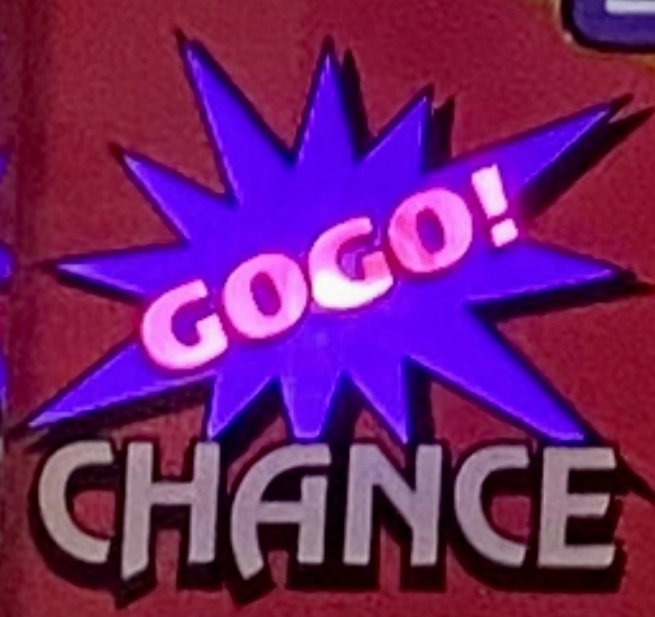
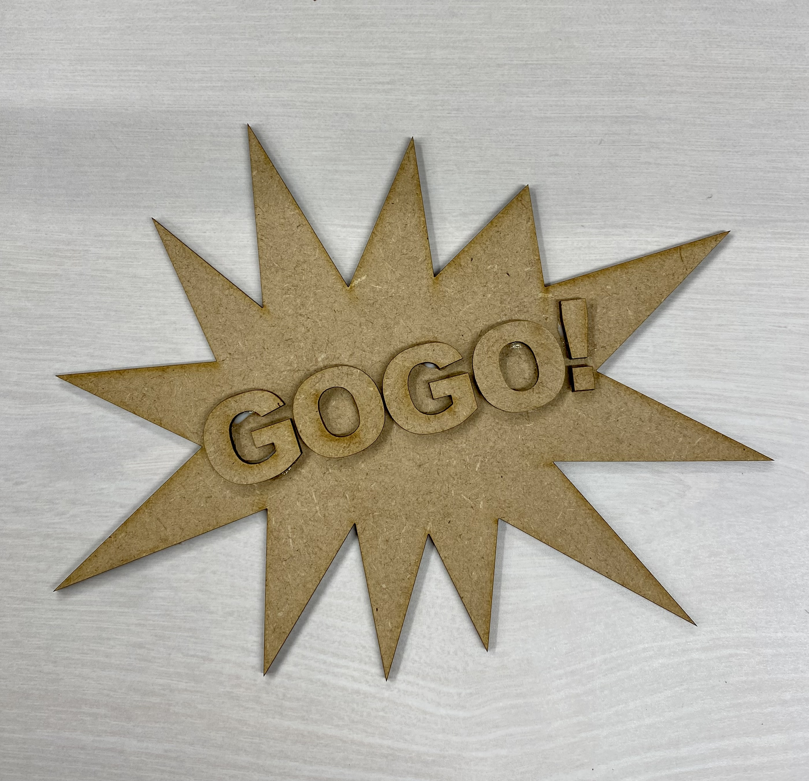

レーザーカッティング課題 ー自分や他人の心を動かすものー
GOGO!ランプ


- 設計ファイル
dfxファイル
AIファイル
- 作品の説明
今回は自分の心を動かすものを考え制作をしました。
自分はギャンブル好きで特に最近はスロットのジャグラーをメインに立ち回っているので、
その中の光ると当確の演出であるGOGO!ランプ選びました。
形をスケッチで再現をし、GOGO!の文字も本来と同じフォントに似せました。
- 制作プロセスの中で調べたこと
- フュージョンの作成動画
- 歴代の先輩方の作品
- 反省点や応用がきくなと思った点
反省点
- 最初から文字をくっつけた構造にしたかったがOの切り抜きに気づき解決方法が思いつかず貼り付ける形にした。
応用がきく点
- 過去の先輩方の例にもあったコースターにしてみる
- 本来のものと同様光るように設計する